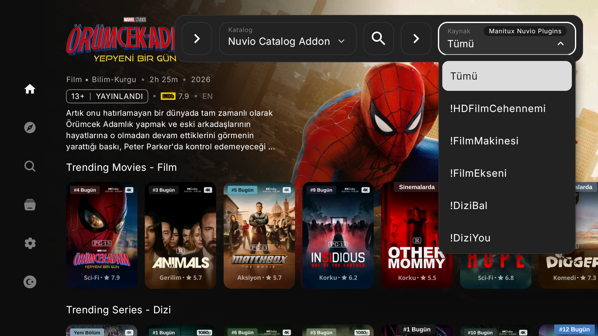
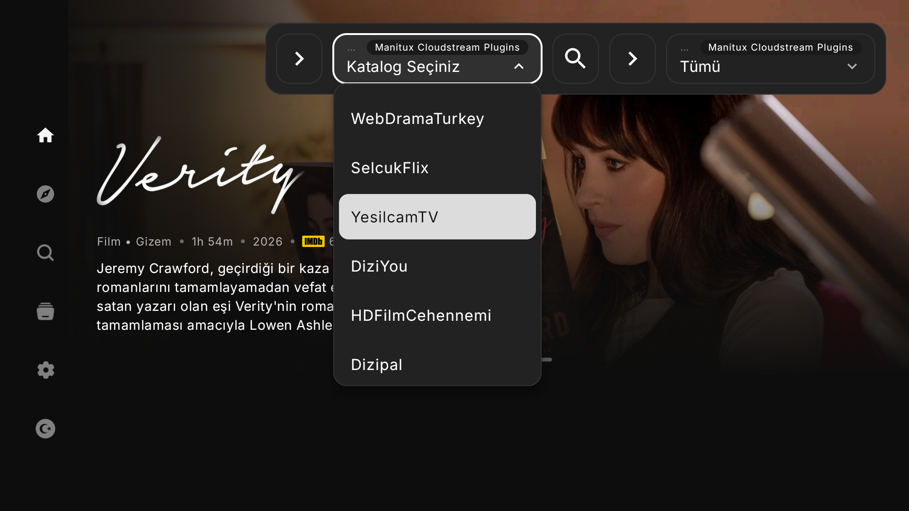

01 · Katalog + yayın yetenekleri
Nuvio eklentileri daha esnek
Nuvio eklentilerinde katalog ve yayın yetenekleri artık birbirinden bağımsız çalışır. Yalnızca katalog sunan bir eklenti, kendi içerik raflarını gösterebilir; yayın sunan eklentiler ise seçili içeriğin kaynaklarını bulmak için kullanılabilir. Hem katalog hem de yayın sunan eklentiler ise tadından yenmez :)

